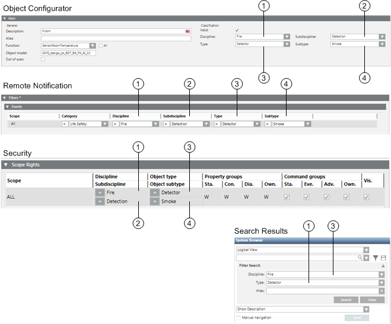

Changing an Object Classification
The classification of an object includes its discipline, type, subdiscipline and subtype.
- In System Browser, select the object you want to modify. For example, Project > Field Networks > [network] > Hardware > [device] > [data point].
- Select the Object Configurator tab.
- In the Main expander, change the following entries:
- 1 = Discipline
- 2 = Subdiscipline
- 3 = Type
- 4 = Subtype
- Select the Valid
 check box.
check box.
NOTE: The check box may not be green or blue. - Click Save
 .
.
The figure below illustrates the Object Configuration entry, as well as the corresponding applications that evaluate the information.

NOTICE

Alarm Not Forwarded
Changes to an object assignment can have a direct impact on future alarms. After each change, check the alarm functionality of alarm.